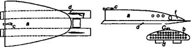
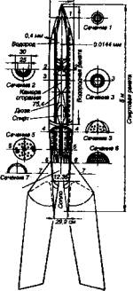
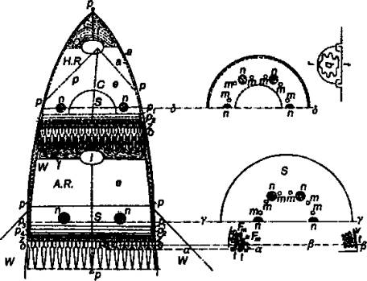

Немцы стартуют
В начале XX века Германия была своеобразной «Меккой» физиков, химиков и инженеров всего мира. Именно здесь чаще всего выдвигали наиболее сумасшедшие идеи (вспомните хотя бы Эйнштейна) и строились самые совершенные машины. Двигатели Дизеля исправно служа! нам и по сей день.
Понятно, что немецкие инженеры и изобретатели не обошли вниманием и модную тогда тему освоения воздушного и безвоздушного пространства.
РОЖДЕНИЕ «РАКЕТНОГО ОБЩЕСТВА». Удивительный все-таки народ немцы! Какое бы они дело ни затевали — «пивной путч» или создание ракетного общества, они никак не могут сделать этого без кружки-другой пенящегося напитка и пары сосисок к нему.
Летом 1927 года несколько человек, живших в небольшом немецком городке Бреслау, встретились в задней комнате ресторана. Попили, поели и… создали объединение, члены которого обдумывали бы и распространяли идеи, как послать людей в космос и на другие планеты.
Поначалу они назвали себя Обществом межпланетных сообщений («Verein fur Raumschififahrt»). Но в других странах эта организация стала известной как «Немецкое ракетное общество».
Президентом выбрали инженера Иоганна Винклера, а он, в свою очередь, вскоре наладил издание ежемесячного журнала «Ракета» («Die Rakete»), в котором регулярно публиковались наиболее ценные идеи и проекты членов «Общества».
Журнал издавался за счет членских взносов и пожертвований. А поскольку Общество межпланетных сообщений росло очень быстро — среди его членов были профессор физики Герман Оберт, летчик-изобретатель Макс Валье, инженеры Франц фон Гефт, Гвидо фон Пирке, Эйген Зенгер и многие другие люди, с именами которых мы еще встретимся в этой книге, — то вскоре при «Обществе» был организован и фонд, финансировавший самые оригинальные разработки с целью экспериментальной проверки их работоспособности.
ГЕРМАН ОБЕРТ И ЕГО КОЛЛЕГИ. Этого человека иногда называют «немецким Циолковским». И действительно, в конце 1923 года он так же, как и Константин Эдуардович, выпустил в Мюнхене невзрачную на вид брошюру «Ракета и межпланетное пространство».

Ракета Ф. фон Гефта.
В этой книжке Герман Оберт подобно своему русскому коллеге писал о том, что «современное состояние науки и технических знаний позволяет строить аппараты, которые могут подниматься за пределы земной атмосферы». А дальнейшее усовершенствование этих аппаратов со временем приведет к тому, что они будут развивать такие скорости, которые позволят им преодолеть силу земного притяжения и вывести на околоземную орбиту не только грузы, но даже людей.
Однако была между этими людьми и существенная разница. Если Циолковского мало интересовало, сколько могут стоить его «игрушки», то Оберт с самого начала ставил во главу угла трезвый расчет. «В определенных условиях изготовление таких аппаратов может стать прибыльным делом», — сообщает он.
Кстати сказать, утилитарный подход возымел место даже в издательско-популяризаторской деятельности Оберта. И первая его книга, и вторая — «Пути осуществления космического полета» — переиздавались неоднократно и оказались вполне выгодными коммерчески.
В своих трудах Оберт не только подробно рассказывал о том, что было сделано до него, но и выдвигал собственные, довольно ценные идеи. Так, скажем, он предложил идею «воздушного старта», которую пытаются реализовать ныне наши и иностранные конструкторы. А именно — ракеты должны стартовать не с земли, а с высоты в 5500 м и более над уровнем моря, будучи подвешенными к специальным дирижаблям.
Причем один из его космических кораблей, получивший название «Модель Е», имел весьма солидные размеры даже по современным меркам. Общая длина ракеты, рассчитанной на двух пассажиров, оценивалась Обертом как «примерно соответствующая высоте четырехэтажного дома», а ее масса — 288 т!
Предполагалось, что она будет состоять из двух частей: первая, разгонная ступень работала на спирте и жидком кислороде, а вторая при том же окислителе использовала жидкий водород. Согласитесь, в 20-е годы прошлого века было предложено вполне современное решение топливной проблемы.
Причем в верхней части второй ступени Оберт предлагал разместить «аквариум для земных жителей», т. е. обитаемый отсек с иллюминаторами, позволяющими вести астрономические наблюдения.
Чтобы преодолеть земное притяжение, ракета, как показали расчеты Оберта, должна была лететь 332 с при ускорении 30 м/с и достичь высоты 1653 км.
Возвращение же пассажирской кабины на Землю Оберт планировал посредством парашюта либо при помощи специальных несущих поверхностей и хвостовых стабилизаторов, позволяющих реализовать спуск.
В описаниях его еще немало деталей и частностей, которые были затем реализованы (или выдуманы заново) современными конструкторами. Так, скажем, Оберт предусмотрел выход в открытый космос.

Ракета «Модель В» конструкции Г. Оберта.
«На летящей ракете при выключенном двигателе опорное ускорение отсутствует и пассажиры могут в специальных костюмах выходить из пассажирской кабины и „парить“ рядом с ракетой, — писал он. — Костюмы должны выдерживать внутреннее давление в 1 атмосферу…»
И далее: «Нам кажется непрактичным давать человеку, находящемуся вне ракеты, воздух через шланг из пассажирской кабины, целесообразнее подавать ему сжатый или жидкий воздух из специального баллона».
Кроме того, указывает Оберт, человек в скафандре должен быть обязательно связан с ракетой канатом и телефоном.
Подумал он также и о шлюзе, «который можно герметически закрывать с обеих сторон».
В общем, когда читаешь все это, кажется, что выход А. А. Леонова был осуществлен по сценарию Оберта.
Впрочем, Оберт был не единственным членом ракетного общества, кто хорошо владел пером. В 1924 году популяризацией идеи межпланетных путешествий занялся также мюнхенский литератор и бывший пилот Макс Валье. В своей книге «Полет в мировое пространство» он, в частности, предложил способ превращения обычных самолетов в космические путем замены двигателей внутреннего сгорания ракетными.
Еще одну книгу на ту же тему издал и Вальтер Гоман, архитектор города Эссена. Он мыслил строительными категориями, а потому описал целую «пороховую башню», с помощью которой и предлагал стартовать в космос.

«Модель Е» Г. Оберта: а — головка спиртовой или водородной ракеты; f — парашют; t — проход в помещение I; е — резервуар для водорода или для воды со спиртом; S — резервуар для кислорода; I — кабина наблюдателя и место размещения приборов; р — перископ; т, ? — насосы подачи горячего газа; и р — насосы для горючего; рЗ и р4 — кислородные насосы; Fm — критическое сечение сопла; z — распылитель; ? — регулирующие штифты; t — стенки сопла; W — стабилизаторы; О — камера сгорания. Сплошными линиями показана спиртовая ракета, пунктирной линией — водородная.